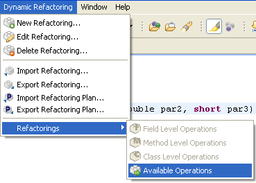
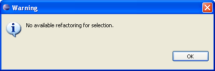
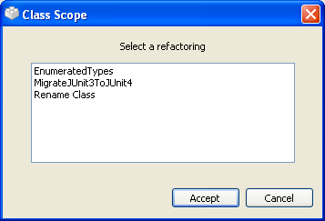

Running Refactorings From the Default Java EditorRunning Refactorings From the Default Java Editor
Running Refactorings From the Default Java EditorRunning Refactorings From the Default Java EditorWhen you select any text on the default Eclipse Java editor the menu Available operations
becomes enabled. In order to run a refactoring on the selected element, you have two possibilities:
Right-click on the editor on the selected element you want to apply the refactoring on, and select the popup-menu item Dynamic Refactoring> Available Operations.

Run available refactoring popup
Inside Eclipse select the menu item Dynamic Refactoring> Refactoring> Available Operations.

Run available refactoring menu
Before trying to go any further, the plugin will check if the text selected contains only a valid main input for any type of refactoring, that is either a class, a method, an attribute, a formal argument of a method or a formal parameter of a generic class. If it does not, a warning message will open.

If the selection is valid the plugin starts building the internal model it will use. When the process is over, a selection window with the available refactorings for the selected scope will open.

It is now that you must select the refactoring you would like to apply. When you have already chosen one,
push the Accept button in order for the refactoring process to start.
When you select an element from the editor, the "Available Reactorings" view update its contents with the element-scope refactorings if this it`s a valid principal entry for a refactoring. Then you have to double-click one of them to start the ejecution of one of the refactorings.

See the related task down below for more detailed info on how to configure and run refactorings.